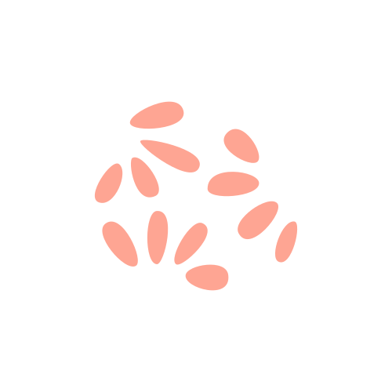
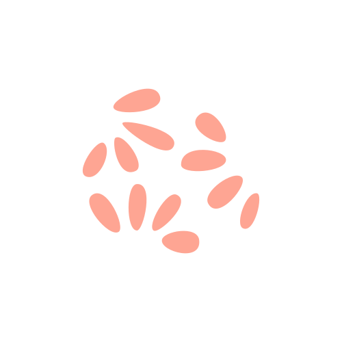

Bienvenue dans l'univers coloré de ma créativité graphique.
Je suis une graphiste passionnée qui aime ajouter une touche
de magie visuelle à chaque projet. Imaginez-vous plonger dans
un kaléidoscope de formes et de couleurs, où l'imagination se
libère et où les idées prennent vie. C'est là que je me sens
chez moi, dans cet espace où la créativité se mélange à la
technologie pour créer des designs époustouflants.
Avec une formation en design graphique et quelques expériences
avec des particuliers, j'ai développé une approche unique qui
associe ma passion pour l'art et mon expertise technique.
Je jongle entre de la conception de logos et d'identités visuelles,
à la création d'interfaces utilisateur pour des sites web et des
applications mobiles.
Si vous recherchez une graphiste qui ose sortir des sentiers battus,
qui vous offre une expérience visuelle immersive et qui apporte une
dose de magie à votre projet, ne cherchez pas plus loin.